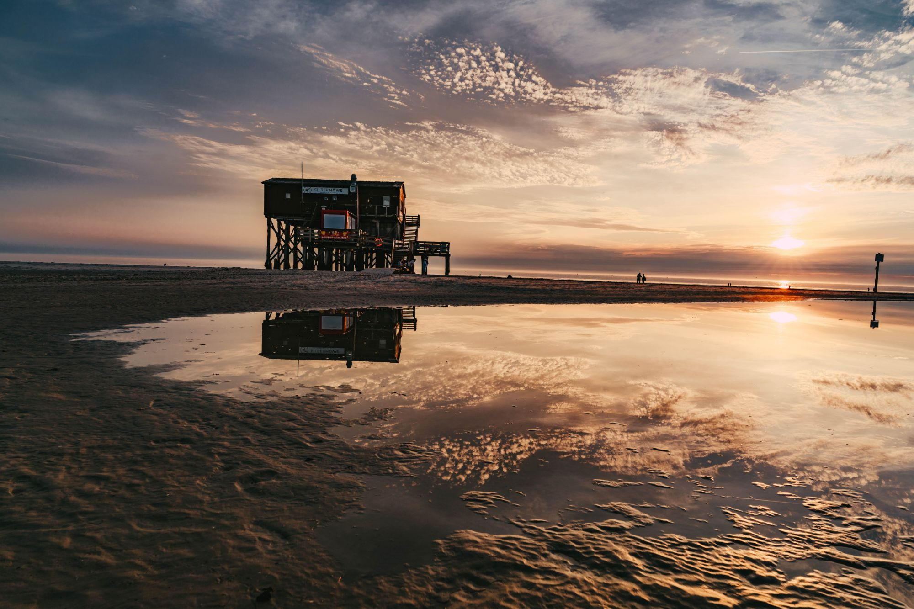
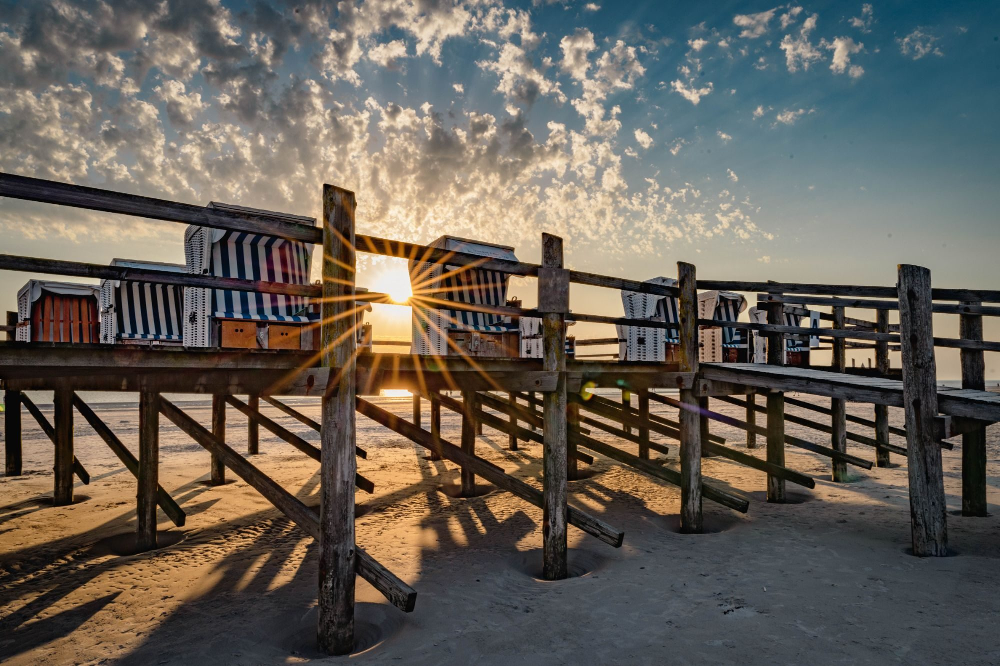
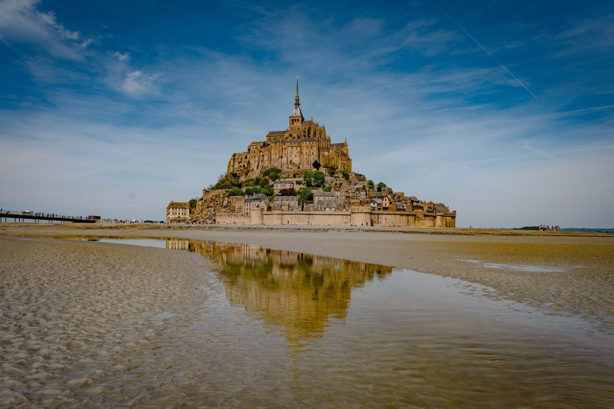

Fotografie
Licht, Landschaft, Reisen
Ich fotografiere Landschaften, Orte und Menschen unterwegs. Auf meinem Reiseblog Augenliebe erzähle ich, was hinter den Bildern steckt.



Fotografie & Webdesign
01 — Über mich
[Wer du bist und wie du zur Fotografie gekommen bist – zwei, drei persönliche Sätze.]
[Wofür deine Bilder stehen: Licht, Stimmung, Menschen, Landschaften …]
02 — Portfolio
Fotografie
Ich fotografiere Landschaften, Orte und Menschen unterwegs. Auf meinem Reiseblog Augenliebe erzähle ich, was hinter den Bildern steckt.
Webentwicklung
Seit 2010 entwickle und erstelle ich Websites, freiberuflich und mit viel Sorgfalt bei Gestaltung und Technik.
CMS
Ich arbeite mit Content-Management-Systemen: Seiten aufbauen, Inhalte pflegen und Projekte bis zur Umsetzung begleiten.
Social Media
Ich plane, gestalte und betreue Social-Media-Kanäle: von Konzept und Content bis zur Veröffentlichung, passend zur jeweiligen Marke.
03 — Lebenslauf
Beruf
Sicherheits- und IT-Audits.
Webentwicklung, Web-Erstellung und Digital Imaging.
Sicherheits- und IT-Audits.
Projektmanagement für Internet- und Intranetanwendungen, BSI IT-Grundschutz, CMS.
Content-Management-Systeme und Projektmanagement.
Ausbildung
04 — Kenntnisse